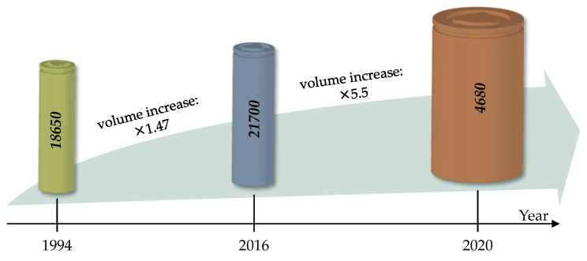
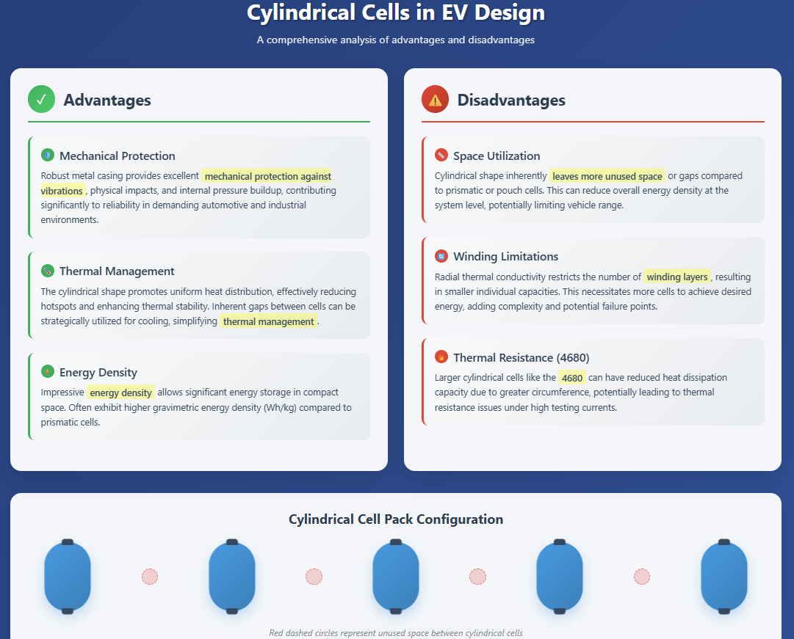
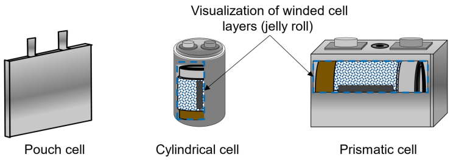
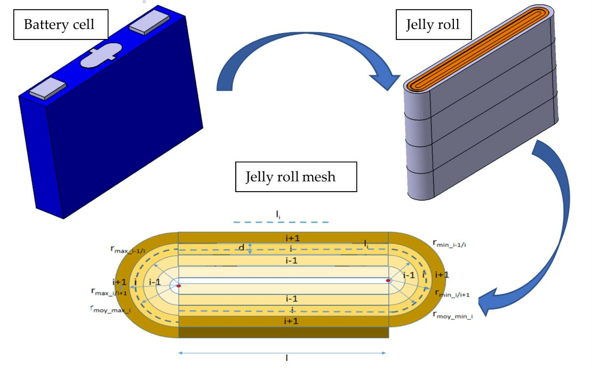
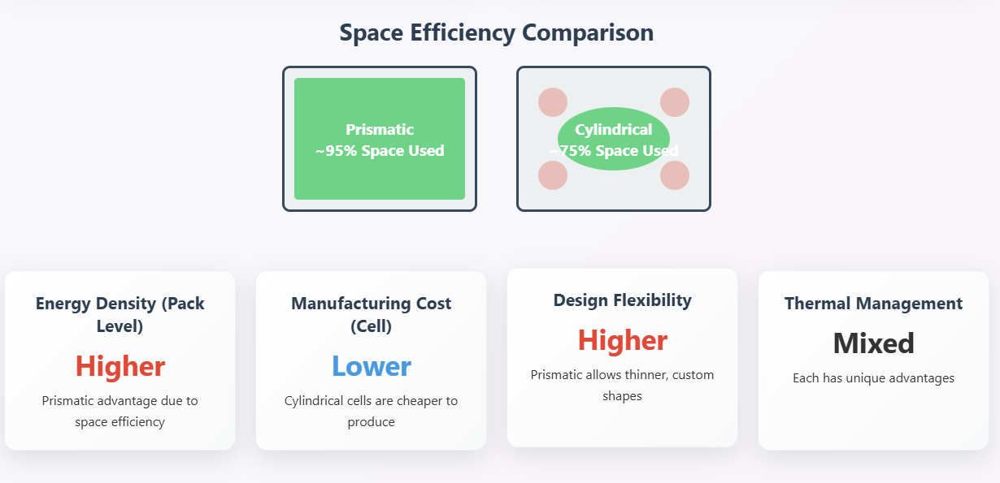
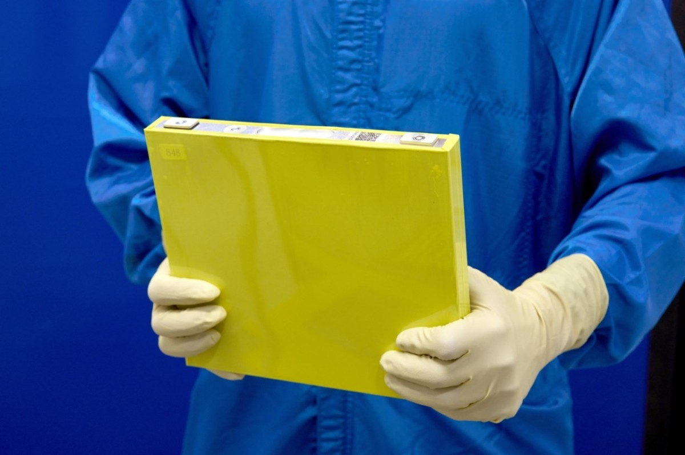
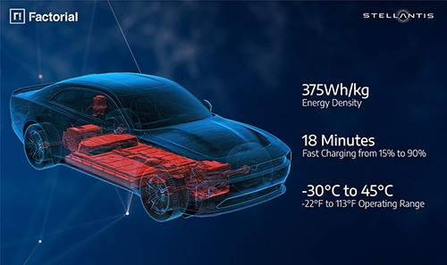
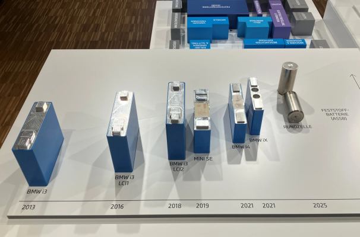

Ever wondered why electric vehicles (EVs) come in such different shapes and sizes? It’s not just about style or aerodynamics—it often boils down to what's inside the battery pack. One of the most overlooked but game-changing aspects of EV design is the form factor of the battery cells: cylindrical, prismatic, or pouch. Each has its quirks, strengths, and trade-offs that can totally transform the design, performance, and cost of an EV. Let's take a deep dive into how form factor shapes the future of electric mobility.
Cylindrical Cells: The Enduring Standard
Cylindrical cells are characterized by their tubular shape, reminiscent of traditional AA batteries, and are encased in a robust steel or aluminum alloy casing. Their internal structure involves electrode materials—anode, separator, and cathode—wound in a spiral configuration. Standardized sizes such as 18650 (18mm diameter, 65mm height) and 21700 (21mm diameter, 70mm height) have been prevalent for decades, with newer, larger formats like the 4680 (46mm diameter, 80mm height) gaining traction, notably with manufacturers like Tesla and BMW Group . The winding process, particularly for these larger formats, demands precise mechanical properties, which can add to manufacturing complexity.

Advantages for EV Design
Cylindrical cells offer several compelling advantages that have cemented their place in EV design. Their robust metal casing provides excellent mechanical protection against vibrations, physical impacts, and internal pressure buildup, contributing significantly to their reliability in demanding automotive and industrial environments.
From a thermal perspective, the cylindrical shape promotes uniform heat distribution, effectively reducing hotspots and enhancing thermal stability. The inherent gaps between cylindrical cells when assembled into a battery pack can be strategically utilized for cooling, simplifying thermal management for these cells.
Cylindrical cells boast an impressive energy density, allowing them to store significant amounts of energy in a relatively compact space. They often exhibit higher gravimetric energy density (Wh/kg) compared to prismatic cells.

Disadvantages for EV Design
Despite their advantages, cylindrical cells present certain challenges for EV design. When assembled into battery packs, their cylindrical shape inherently leaves more unused space, or gaps, compared to prismatic or pouch cells. This can reduce overall energy density at the system level, potentially limiting a vehicles range.
The radial thermal conductivity of cylindrical cells restricts the number of winding layers, resulting in smaller individual capacities. This necessitates the use of a greater number of cells in EV applications to achieve desired energy capacities, which adds complexity to the battery pack and can lead to connection losses, increasing manufacturing complexity and potential points of failure.

The fixed cylindrical shape may also not be ideal for certain device designs that require greater flexibility or specific form factors to maximize space utilization. Lastly, while generally adept at heat dissipation, larger cylindrical cells like the 4680 can have a reduced capacity to dissipate heat due to their greater circumference, potentially leading to thermal resistance issues under high testing currents.
Prismatic Cells: The Space Optimizers
Prismatic cells are characterized by their flat, rectangular shape, with electrode materials either stacked or rolled and flattened, all housed within a rigid casing, typically made of aluminum or steel. This design is optimized for space efficiency and facilitates efficient stacking within battery modules. Prismatic cells are substantially larger than cylindrical cells, with a single prismatic cell potentially storing as much energy as 20 to 100 cylindrical cells.

Advantages for EV Design
Prismatic cells offer distinct advantages, particularly in optimizing space within EV battery packs. Their rectangular shape allows for a more compact and uniform arrangement, effectively eliminating the wasted space (gaps) seen in cylindrical cells. This maximizes overall energy density at the pack level, which is crucial for extending EV driving range or allowing for larger battery capacities within the same vehicle volume.
Being larger, prismatic cells house significantly more energy per cell. This means fewer cells are needed to achieve a specific energy capacity, leading to fewer electrical connections in the battery pack. This reduction in connections can minimize manufacturing complexities and potentially lower the risk of defects and points of failure. Manufacturers can easily scale prismatic batteries to different capacities and form factors by adjusting electrode thickness and cell size, making them adaptable to a wide range of EV designs, from compact cars to large commercial vehicles. Their flat shape also offers more flexibility in battery pack configurations, allowing for thinner device profiles and greater design freedom.

While cell manufacturing can be complex, the assembly of prismatic cells into larger battery packs is generally more straightforward due to their predictable, stackable shape. This can potentially reduce manufacturing complexities and costs at the pack level. The rigid outer casing of prismatic cells provides robust mechanical stability, resistance to swelling, and protection from mechanical stress and puncture risks. This structural integrity helps maintain consistent pressure on internal components, mitigating expansion and contraction during charge/discharge cycles, which can prevent capacity loss over time. Additionally, prismatic batteries can be designed with large electrode areas, minimizing internal resistance, which enhances efficiency, allows for higher discharge rates, and faster charging times.
Disadvantages for EV Design
Prismatic cells can also be prone to swelling over time due to overcharging, aging, or manufacturing defects. This swelling can distort the cell geometry and potentially affect the battery packs structural integrity. While their rigid casing offers protection, their stacked internal layers can be more susceptible to short circuits and performance inconsistencies. The assembly process for prismatic batteries, particularly the precision required for stacking their flat electrode layers, can be more complex and costly at the cell level than for cylindrical cells. This can result in a higher cost per kilowatt-hour.
Recent Technologies Shaping EV Battery Cell Form Factors
1. Lithium Manganese Rich (LMR) Prismatic Cells
- General Motors and LG Energy Solution are pioneering LMR battery technology in prismatic form factors for future electric trucks and SUVs.
- LMR cells use a high-manganese, low-cobalt chemistry, significantly reducing material costs while offering 33% more energy density at a comparable cost to LFP (lithium iron phosphate).
- The prismatic design allows for larger cells, reducing the number of components by up to 75% at the module level and 50% at the pack level, streamlining manufacturing and improving packaging efficiency.
- Proprietary coatings, dopants, and particle engineering have addressed previous LMR issues (like voltage attenuation), enabling lifespans comparable to high-nickel cells.

2. Solid-State Batteries
- Stellantis and Factorial Energy have validated automotive-sized solid-state battery cells with 375 Wh/kg energy density and fast charging (15% to 90% in 18 minutes).
- These batteries use FEST® (Factorial Electrolyte System Technology), which enables high power output (up to 4C discharge) and broad temperature operation (-30°C to 45°C).
- Solid-state designs are being optimized for prismatic and pouch form factors, promising lighter packs, improved safety, and higher energy density for next-generation EVs.

3. Blade Cell and Cell-to-Pack Integration
- BYD ’s “blade cell” innovation uses elongated LFP prismatic cells integrated directly into the battery pack structure, enhancing stiffness and packaging density.
- This approach eliminates the need for traditional module housing, resulting in lighter packs and extended vehicle range (over 520 km WLTP, with ambitions for 1000 km).
- Blade cells leverage LFP’s intrinsic safety, allowing for denser and more structurally integral battery packs.

Case Study: Tesla’s Use of Cylindrical Cells
18650, 21700, and the new 4680
Tesla’s innovation in cylindrical cells has become industry legend. Starting with the Panasonic-supplied 18650 cells in the early Model S and X, Tesla later transitioned to 21700 cells in the Model 3 and Model Y, offering better energy density and lower cost.

Recent Technology: CATL’s Qilin Battery (Prismatic Cell Based)
In 2022, CATL, the world’s largest battery maker, unveiled the Qilin Battery, named after a mythical Chinese creature. This battery is a prismatic cell innovation that claims 13% more power than Tesla’s 4680 cells. It uses CTP (Cell-to-Pack) 3.0 technology—eliminating traditional modules for higher volumetric efficiency.
The result? Up to 255 Wh/kg energy density, 1,000 km range on a single charge, and 80% fast charging in just 10 minutes.
This shows that prismatic formats are not just catching up—they’re leapfrogging in certain areas.

Recent Technology: BMW’s Cylindrical Cell Transformation
BMW is pivoting from prismatic to cylindrical 4680-style cells for its upcoming Neue Klasse EV platform (launching 2025). BMW says this change will improve energy density by 20%, increase range by 30%, and reduce battery costs by up to 50%.
This reversal shows that even legacy automakers are rethinking their battery strategies based on emerging tech.

Conclusion
The move from cylindrical to prismatic cells is transforming EV design. Prismatic cells offer superior packing efficiency and energy storage per cell, while cylindrical cells deliver better thermal management and are cheaper to produce. The ideal choice depends on the specific performance, cost, and space requirements of each EV model, ensuring that battery form factor remains a central consideration in the ongoing electrification of transportation.